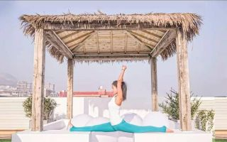
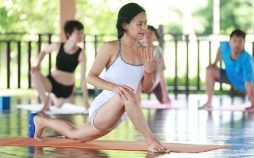
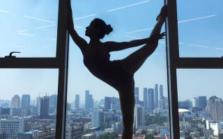
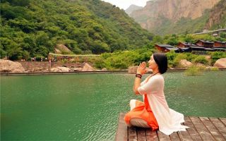

首 页
>
名师
全部
A
B
C
D
E
F
G
H
I
J
K
L
M
N
O
P
Q
R
S
T
U
V
W
X
Y
Z

党雪萍（Michelle）
Michelle的课流畅，细腻，善于观察学员的体式，并及时的给...

苍婧妍
2004年开始教授瑜伽至今，多次参加Ashtanga yoga，Vniyasa...

党雪萍（Michelle）
Michelle的课流畅，细腻，善于观察学员的体式，并及时的给...

苍婧妍
2004年开始教授瑜伽至今，多次参加Ashtanga yoga，Vniyasa...
苍婧妍
2004年开始教授瑜伽至今，多次参加Ashtanga yoga，Vniyasa...
党雪萍（Michelle）
Michelle的课流畅，细腻，善于观察学员的体式，并及时的给...
苍婧妍
2004年开始教授瑜伽至今，多次参加Ashtanga yoga，Vniyasa...
党雪萍（Michelle）
Michelle的课流畅，细腻，善于观察学员的体式，并及时的给...